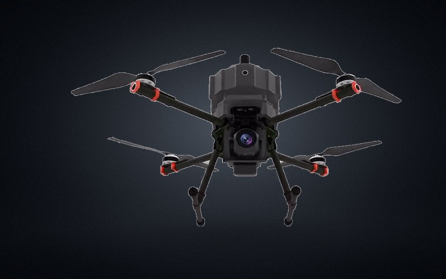
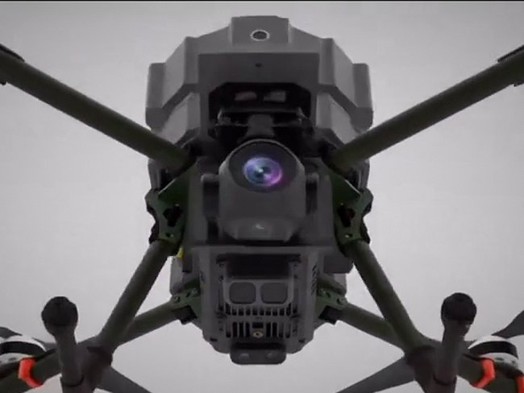

Infrastructure inspection
Stand-off visual inspection of structures, pathways, gates and public facilities using the 30× optical zoom, without flying close to the subject.
30× camera · Obstacle sensing

Product render
Unmanned aircraft system
Autonomous quadrotor platform for aerial inspection and site monitoring. Onboard edge AI, 360° obstacle sensing and centimetre-level RTK navigation, operated through a one-button workflow.
General arrangement
A modular carbon-fibre quadrotor carrying its perception, navigation and imaging systems on a single structure with redundant avionics.

Modular carbon-fibre structure with redundant avionics.
Quadrotor configuration, four rotor assemblies.
RTK GNSS mast. Multi-constellation, centimetre-level positioning.
Upward safety LiDAR and upward wide-angle vision in the upper housing; 360° LiDAR and forward vision on the airframe.
3-axis stabilised AI camera, 30× optical zoom, 4K sensor.
Retractable. Folds after take-off and deploys before landing.
Internal: NVIDIA Jetson edge computer, 4G datalink, protected battery tray with BMS.
Front elevation, product render. Not to scale.
Technical specifications
| Configuration | Quadrotor |
|---|---|
| Structure | Modular, carbon fibre |
| Avionics | Redundant |
| Landing gear | Retractable, automated. Retracts after take-off, deploys before landing |
| Camera clearance | Gear clear of the camera field of view in flight |
| Battery enclosure | Protected tray, IP54 rated |
|---|---|
| Exchange time | < 2 min, quick-swap |
| Management | Integrated charging and BMS |
| Monitoring | Cell balancing, real-time voltage telemetry |
| Positioning | RTK GNSS |
|---|---|
| Accuracy | Centimetre-level |
| Constellations | GPS, GLONASS, Galileo, BeiDou |
| Corrections | Differential, from RTK ground base |
| Waypoints | Repeatable execution, near-zero drift |
| Omnidirectional LiDAR | 360° horizontal, 15 m radius |
|---|---|
| Forward vision | Wide-angle, 120° FOV |
| Upward LiDAR | 500 Hz, 0.2–20 m |
| Upward vision | Wide-angle camera |
| Overhead scan | 40 m clearance zone before take-off |
| Downward LiDAR | Millimetre-level AGL and landing precision |
| Environmental | Temperature and humidity sensors |
| Type | 3-axis stabilised AI camera |
|---|---|
| Optical zoom | 30× continuous |
| Sensor | 4K Ultra HD |
| Stabilisation | Active gimbal, compensates vibration and wind |
| Tracking | Real-time target lock |
| Processor | NVIDIA Jetson, onboard |
|---|---|
| Processing | Live video analytics on the aircraft |
| Sensor fusion | YOLO vision with 2D LiDAR |
| Training set | 100,000+ images |
| Monitoring accuracy | 95%+ |
| Cellular | 4G, Linux-based SIM dongle on the edge computer |
|---|---|
| Live results | Streamed to mobile application in flight |
| Ground station | Live video detection feed, emergency manual RTL |
| Operation | One-button autonomous mission |
|---|---|
| Pre-flight | Automatic calibration, battery and readiness checks |
| Take-off interlocks | Overhead obstacle lock; unsafe-location denial |
| Weather | 4G forecast check; live-rain take-off denial; onboard sensor backup |
| Return | Smart RTL on low battery or weather change |
| Control station | Live tracking, detection feed, monitor support |
|---|---|
| RTK base | Base antennas on industrial-height stand |
| Mobile application | Live monitoring, alerts, downloadable reports, flight records |
| Data security | Encrypted, officials-only access |
Sensing performance
Coverage of the obstacle-sensing suite in plan and elevation. Obstacle data from vision and LiDAR is fused on the edge computer for path planning and avoidance.

Payload
The primary imaging payload. Continuous optical zoom lets the aircraft inspect from a safe stand-off distance, and onboard analytics classify what it sees in flight.
Navigation, avionics and autonomy
Perception and imaging data are processed on the aircraft. Navigation is held by RTK corrections from a ground base, and results reach operators over a 4G link while the aircraft is still flying.
Ground segment
Operator interface for live tracking, with the live video detection feed and emergency manual return-to-launch.
Ground segment
Field-deployable base antennas on an industrial-height stand, supplying differential corrections.
Ground segment
Live flight monitoring over 4G, weather reports and mission alerts, downloadable reports and stored flight records, behind encrypted officials-only access.
Applications
Mission profiles supported by the aircraft's imaging, sensing and navigation systems.
Stand-off visual inspection of structures, pathways, gates and public facilities using the 30× optical zoom, without flying close to the subject.
30× camera · Obstacle sensing
Encroachment detection, unsafe-tree identification and blind-spot coverage, with live detection feeds to the ground station and mobile application.
Edge AI · 4G link
RTK-held repeatable flight paths for consistent coverage, with geo-tagged locations for trees, benches, bins, light poles and play equipment.
RTK GNSS · Geo-tagging
Assessment of green cover, canopy, plant health and water stress, and detection of dry zones, waterlogging and leaks.
4K camera · Edge AI
Observation of water level, algal growth and floating waste.
30× camera · Edge AI
Month-on-month comparison of repeat surveys, and verification of completed maintenance works against geo-tagged records.
RTK repeatability · Edge AI
Contact
For system briefings, flight demonstrations and the complete datasheet, contact VAJRON Global Tech.